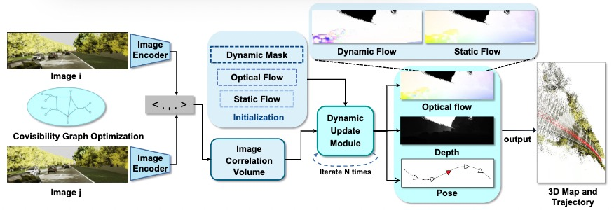
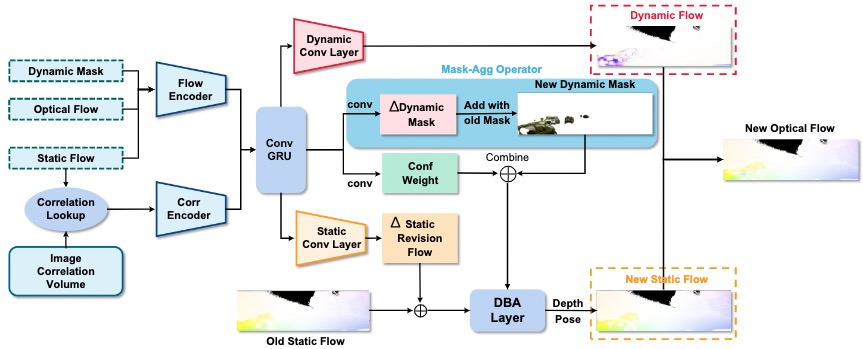
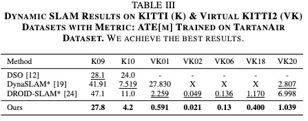
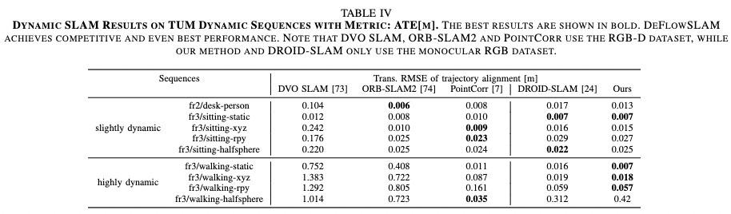
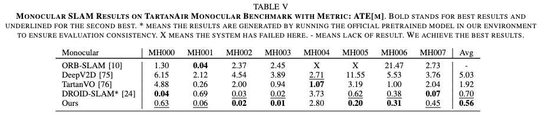
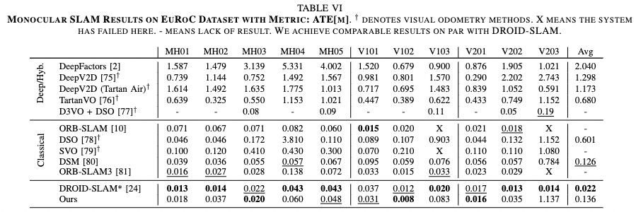
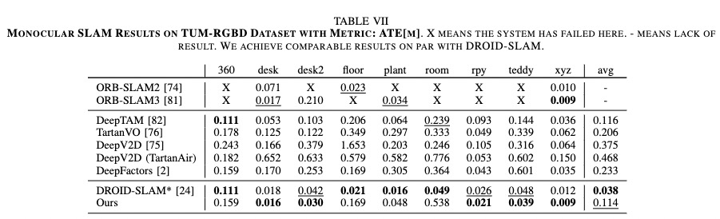
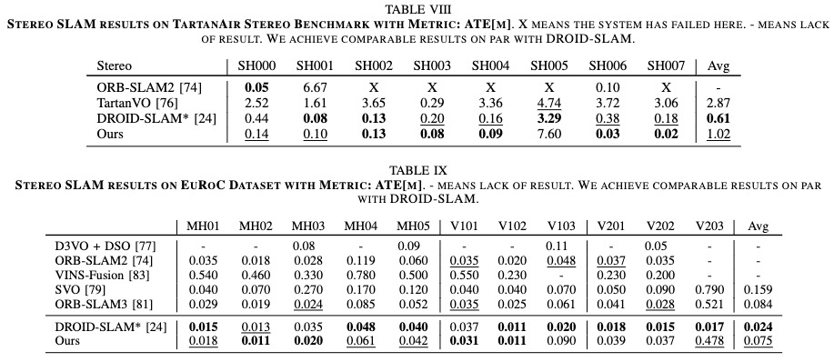
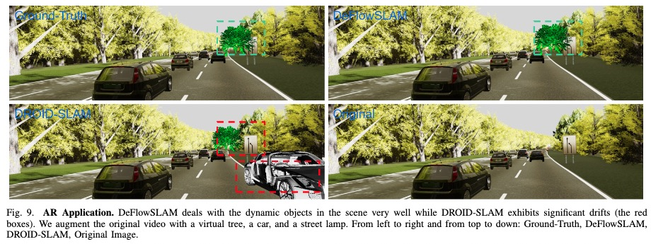

DeFlowSLAM: Self-Supervised Scene Motion Decomposition for Dynamic Dense SLAM
Arxiv 2022
Weicai Ye*1, Xinyuan Yu*1,3, Xinyue Lan1, Yuhang Ming2, Jinyu Li1, Hujun Bao1, Zhaopeng Cui1, Guofeng Zhang1†
1State Key Lab of CAD & CG, Zhejiang University
2Visual Information Laboratory, University of Bristol
3Wuhan University
* denotes equal contribution
† denotes corresponding author
Abstract

We present a novel dual-flow representation of scene motion that decomposes the optical flow into a static flow field caused by the camera motion and another dynamic flow field caused by the objects' movements in the scene. Based on this representation, we present a dynamic SLAM, dubbed DeFlowSLAM, that exploits both static and dynamic pixels in the images to solve the camera poses, rather than simply using static background pixels as other dynamic SLAM systems do. We propose a dynamic update module to train our DeFlowSLAM in a self-supervised manner, where a dense bundle adjustment layer takes in estimated static flow fields and the weights controlled by the dynamic mask and outputs the residual of the optimized static flow fields, camera poses, and inverse depths. The static and dynamic flow fields are estimated by warping the current image to the neighboring images, and the optical flow can be obtained by summing the two fields. Extensive experiments demonstrate that DeFlowSLAM generalizes well to both static and dynamic scenes as it exhibits comparable performance to the state-of-the-art DROID-SLAM in static and less dynamic scenes while significantly outperforming DROID-SLAM in highly dynamic environments.
System overview

DeFlowSLAM Architecture. DeFlowSLAM takes the image sequence as input, extracts features to construct a correlation volume, and feeds it with the initial static flow, optical flow, and dynamic mask into the dynamic update module to iteratively optimize the residual of the pose, inverse depth, static optical flow and dynamic optical flow, and finally outputs the estimation of the camera pose and 3D structure. The optimization process is performed by creating a covisibility graph and updating the existing covisibility graph.
Dynamic Update Module

Dynamic Update ModuleThe correlation feature of the static optical flow is looked up by correlation volumes. The obtained features will be fed into two convolutional layers together with the optical flow and dynamic mask, resulting in intermediate features. These features will be fed to ConvGRU, followed by two convolution layers with dynamic mask residual and confidence. The iterative dynamic mask residual plus the original mask to obtain the new dynamic mask termed Mask-Agg Operator. In addition, static flow revision and dynamic flow are obtained from the static and dynamic convolution layers. The static revision flow plus the original static flow is fed into the DBA layer that combines the dynamic mask and confidence to optimize the depth and pose. Finally, the new static and dynamic flows from the dynamic convolutional layer are summed to the optical flow.
Experiments
We train DeFlowSLAM from scratch on a larger dataset, TartanAir, and test the generalization of our method on different dynamic datasets, such as Virtual KITTI2, KITTI, and dynamic sequences of TUM-RGBD. We also test monocular or stereo datasets, such as static scenes of TUM-RGBD and EuRoc.
 
We test the performance of the proposed DeFlowSLAM on sequences 09 and 10 from KITTI dataset and all sequences from Virtual KITTI2 dataset. Compared with DynaSLAM, which uses Mask-RCNN for dynamic environment and DROID-SLAM, our DeFlowSLAM is far more accurate and robust in dynamic scenes, as shown in Tab. III. We also perform evaluations on TUM RGB-D dynamic sequences with different dynamic proportions and the comparison results in Tab. IV shows that DeFlowSLAM achieves competitive and even best performance. Note that DVO SLAM, ORB-SLAM2 and PointCorr use the RGB-D dataset, while our method and DROID-SLAM only use the monocular RGB dataset.
  
In monocular setting, we test our trained DeFlowSLAM on TartanAir test sets, EuRoC, and TUM RGB-D dataset. As shown in Tab. V, DeFlowSLAM achieves the best results. Tab.VI and Tab.VII show that our method achieves comparable even better results than the SOTA supervised method, DROID-SLAM in most sequences. The results also demonstrate our DeFlowSLAM is more robust than the classical SLAM algorithms as they failed in many sequences. Specifically, we achieve an average ATE of 0.136m on EuRoC dataset, and an average ATE of 0.114m on TUM-RGBD static sequences, outperforming most supervised methods.

Under stereo setup, our trained DeFlowSLAM is also tested on TartanAir test dataset and EuRoC stereo dataset. Tab. VIII illustrates DeFlowSLAM achieves comparable results on par with DROID-SLAM, with an average ATE of 1.02m on TartanAir stereo test dataset, outperforming TartanVO. Tab. IX shows that DeFlowSLAM exhibits comparable results on EuRoc dataset in the stereo setting with DROID-SLAM, outperforming most supervised methods and traditional SLAM, ORB-SLAM3. In most sequences, our method is on the same order of magnitude as DROID-SLAM, which shows the effectiveness of our method.

We conduct extensive experiments on AR applications to demonstrate the robustness of DeFlowSLAM. As shown in Fig. 9, we augment the original video with a virtual tree, a car, and a street lamp. Our DeFlowSLAM can deal with the dynamic objects in the scene very well while DROID-SLAM exhibits significant drifts (the red boxes).
Overview Video
Citation
@article{Ye2022DeFlowSLAM,
title={DeFlowSLAM: Self-Supervised Scene Motion Decomposition for Dynamic Dense SLAM},
author={Ye, Weicai and Lan, Xinyue and Chen, Shuo and Ming, Yuhang and Yu, Xinyuan and Li, Jinyu and Bao, Hujun and Cui, Zhaopeng and Zhang, Guofeng},
booktitle={arxiv},
year={2022}
}